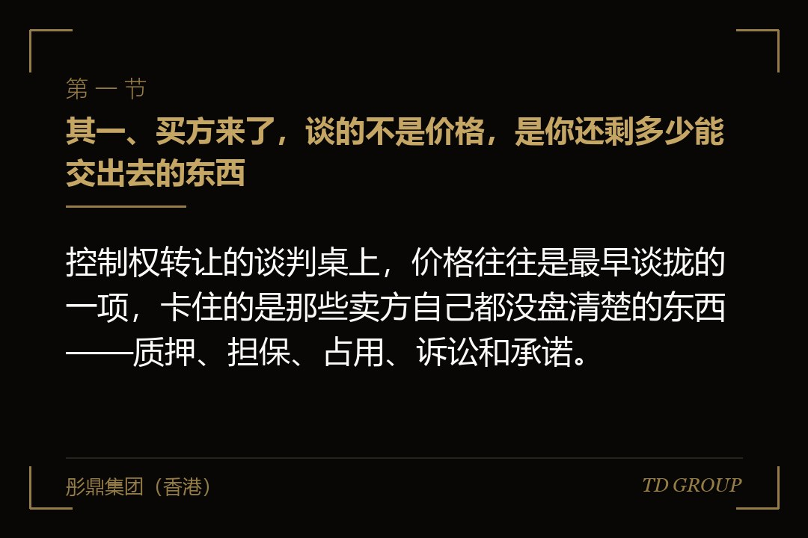
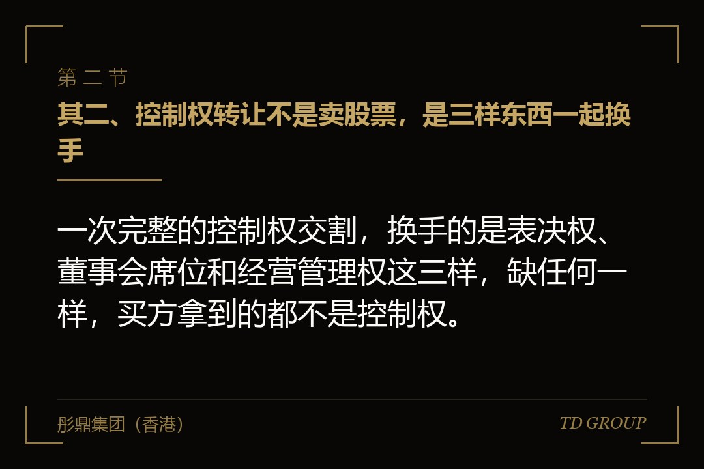
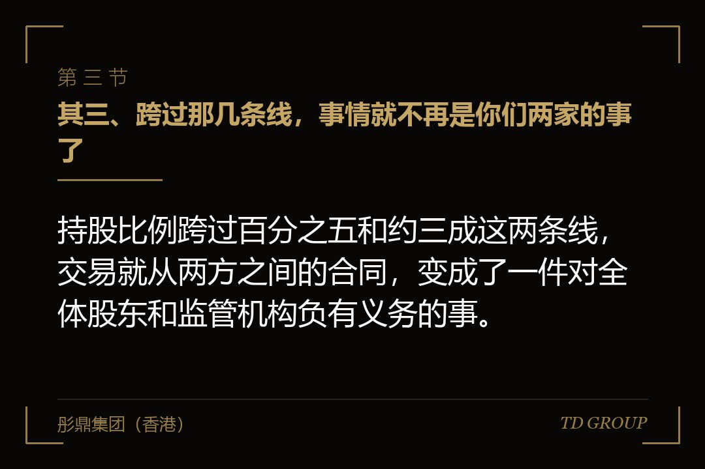

其一、买方来了，谈的不是价格，是你还剩多少能交出去的东西

结论先行：控制权转让的谈判桌上，价格往往是最早谈拢的一项，卡住的是那些卖方自己都没盘清楚的东西——质押、担保、占用、诉讼和承诺。
假设有家在境外上市了六年的制造企业，创始人年纪大了，子女不接班，决定把控制权让出去。买方是同行业的一家产业集团，两边对作价的分歧不到一成，握手的那天大家都觉得三个月能办完。
后来办了十四个月。卡住的不是钱。卖方持有的股份里有相当一部分早年做过质押，解押要先还款，还款要先有钱，而钱本来打算从这笔交易里出，成了一个环。另有两笔为关联企业提供的对外担保还在存续期内，买方不愿意接手一家背着这类担保的公司，要求先解除，而解除需要债权人点头。
再往下翻，还有一笔多年前的资金占用没有彻底清完，以及一份当年上市时作出的、尚未到期的公开承诺——那份承诺是以当时的实际控制人名义作出的，控制权一换，谁来继续履行、怎么衔接，需要一个说法。
这些东西没有一样是在交易开始那天新产生的，它们全都躺在那儿好几年了。区别只是：在原来的实际控制人手上，它们是可以往后放一放的事；到了要交出去那一刻，每一样都变成必须当场回答的问题。
所以这类交易真正的起点不在见买方那天，在更早——把自己这家公司当成一个即将被别人翻检的对象，先自己翻一遍。
其二、控制权转让不是卖股票，是三样东西一起换手

结论先行：一次完整的控制权交割，换手的是表决权、董事会席位和经营管理权这三样，缺任何一样，买方拿到的都不是控制权。
其一是表决权。它可以来自直接持股，也可以来自表决权委托、一致行动协议，或者放弃表决权的安排。实务中常见的做法是先协议受让一部分存量股份，同时由原实际控制人把剩余股份的表决权委托给买方，用较少的现金先把表决权做到位。
其二是董事会。股东会上的多数只能决定少数几类事项，公司的日常经营是由董事会和它聘任的管理层决定的。所以交易文件里通常会有一条关于董事会改组的安排：在什么时点召开股东会、改选几个席位、原方保留几席、独立董事怎么衔接。
其三是经营管理权，也就是财务负责人、印章、网银权限、核心业务系统的实际掌握。这一层最琐碎，也最容易在交割清单里被写得含糊，而它恰恰是「已经过户」和「真的接管了」之间的差别。
三样东西的时点往往不一致。股份过户可能在某一天完成，董事会改选要等下一次股东会，管理权移交又可能拖到再往后。中间那段时间里，公司处在一个表决权已经易主、经营班子还是原来那套的状态，很多问题就发生在这一段。
因此交易文件里值得写清楚的，不是「何时完成交割」这一个时点，而是这三样各自的时点，以及在它们没对齐的那段时间里，哪些事项需要双方共同同意才能做。
其三、跨过那几条线，事情就不再是你们两家的事了

结论先行：持股比例跨过百分之五和约三成这两条线，交易就从两方之间的合同，变成了一件对全体股东和监管机构负有义务的事。
头一条线是百分之五。多数成熟市场都把这个比例作为权益披露的起点：任何人取得一家上市公司百分之五以上的有表决权股份，都要在很短的期限内提交一份权益变动的报告，说明持股数量、资金来源和后续意图。此后每增加或者减少一定比例，还要再报一次。
这条线的实际影响是节奏。签了协议还没披露的那段时间里，双方对信息的处理需要格外小心；而一旦披露，交易就进入公众视野，后面的每一步都要经得起看。至于具体的申报期限，各市场规定不同且近年有过调整，以正式规则文本为准。
第二条线更贵，是约三成。在香港的收购守则和境内的收购管理办法下，取得一家上市公司百分之三十以上的表决权，通常会触发向其余全体股东发出全面要约的义务——也就是说，你要准备好按同样的条件，把其余股东手里的股份也一并买下来。
这条线把交易的资金规模从「买多少谈好的股份」变成了「理论上可能要买下全部流通在外的股份」。所以实务中有大量安排是围绕这条线设计的：把持股控制在触发线以下，用表决权委托补足控制力；或者按规则申请豁免；或者干脆做好全面要约的资金准备。
需要说明的是，用表决权委托来规避触发线并不是一个总能成立的办法。多个市场的规则都会把一致行动关系和表决权安排一并计入，判断的是实质上的控制而不是形式上的持股数字。这一点在交易结构设计的最初阶段就要请当地律师给出意见，不能等到快交割了再问。
其四、交易所那一关：换了实际控制人，可能等于重新申请一次上市
结论先行：换了实际控制人，交易所要重新确认这家公司是否仍然符合上市条件，纳斯达克更是把控制权变更列为需要重新提交一份初始上市申请的情形。
这一点常常被中国的企业主低估，因为直觉上会觉得：公司还是那家公司，只是股东换了，跟上市资格有什么关系。
规则的逻辑不同。上市地位是给这个主体的，而主体的持续经营能力、治理结构、管理层适格性，很大程度上取决于谁在控制它。所以控制权一变，交易所要重新看一遍：新的控股股东是谁、有没有不良记录、新的管理层是否符合要求、公司的业务是否仍然是当初获准上市时的那个业务、公众持股与股东人数等指标是否仍然达标。
在纳斯达克，这件事体现为一份新的初始上市申请，而不是一次备案。它意味着一段以月计的审核期，期间可能收到问询，也可能被要求补充材料。港交所对控制权变更同样有相应的审视机制，境内对涉及实际控制人变更的收购则有专门的信息披露与合规要求。
对交易节奏的影响是具体的：如果买卖双方在时间表里把这一关按「走个流程」估算，几乎必然会延期。而延期本身在这类交易里是有代价的——过渡期越长，公司处在两套班子之间的时间就越长，业务、客户和核心人员的流失风险都在累积。
所以在签署交易文件之前，值得先做一件事：把这家公司在新股东之下是否仍然满足各项持续上市条件逐条对一遍，把不满足的那几条列出来，写进交易文件的先决条件里。
其五、把资产装进去的那条路，为什么常常走成重新上市
结论先行：多数买方接手上市公司是为了后续把自己的资产注入进去，而这一步在各主要市场都有专门规则，达到一定规模时会被视同一次全新的上市申请。
买方的算盘通常是这样：先取得控制权，再把自己体系内的经营性资产注入上市主体，让上市公司从原来的业务转向新的业务。这条路本身是合法的、也是常见的，问题在于它触发的规则比多数人预期的严格。
香港联交所有反收购行动的规则，把控制权变更后一段时间内注入资产、导致公司业务发生根本性转变的一系列交易，视为新上市申请处理，注入的资产要按照首次上市的标准接受审核。境内的重组办法对构成重组上市的情形，同样要求按照首次公开发行的标准审核。
这意味着什么？意味着注入的那块资产，本身要够得上独立上市的条件——盈利记录、独立性、同业竞争、关联交易、内控规范，一样都不能少。很多买方是在取得控制权之后才发现，自己手上那块资产离这个标准还差着两三年的整改。
于是就出现了一种代价很高的处境：钱花了，控制权拿到了，资产装不进去；上市公司原有的业务因为控制权变动这段时间的动荡而下滑，新的业务又进不来。
规避这件事的办法不是想办法绕过规则——各市场对这类安排的实质重于形式判断都很成熟。办法是把顺序倒过来：在决定要不要接手一家上市公司之前，先把自己那块拟注入资产按照首次上市的标准做一次体检，看清楚差距在哪里、补齐要多久，再来决定这笔交易值不值得、时间表该怎么排。
其六、卖方在签字之前要先把自己这边清干净
结论先行：卖方能拿到什么价格，很大程度上取决于交割时能交出一家多干净的公司；清理这件事做在谈判之前和做在谈判之中，价钱完全不一样。
需要提前处理的通常是这么几类。股份质押与冻结。用于转让的股份必须处于可转让状态，质押要解除、冻结要解封。这一项经常成为交易的关键路径，因为解押往往需要先偿还债务，而资金安排又依赖交易本身，需要提前设计过桥方案或者共管账户。
对外担保与资金占用。上市公司为控股股东及其关联方提供的担保、以及被占用的资金，是买方普遍不愿承接的东西，也是监管重点关注的事项。这两项要在交割前清理完毕，并且要有能够核查的凭证，不能只有一纸承诺。
未了结的诉讼、仲裁与行政处罚。已经发生的不必隐瞒，隐瞒的代价远高于披露；正确的做法是把每一项的进展、可能的结果和已计提的金额列清楚，让买方在定价时把它算进去。
尚未履行完毕的公开承诺。上市时或者历次重组时作出的承诺，控制权变更后如何衔接，需要在交易文件中安排明确，必要时由新的控股股东出具接续承诺。
关联交易与同业竞争。原实际控制人体系内与上市公司存在业务往来的部分，交割后如何处理——终止、转让还是继续按市场价格进行——要在文件里写死，否则会成为后续持续的合规负担。
把这几类东西提前整理成一份台账，附上凭证，交易的谈判周期通常能明显缩短。反过来，让买方在尽职调查中一件一件挖出来，每挖出一件，价格都会被往下压一次，而且压的幅度往往超过那件事本身的金额。
其七、收口：一张让双方都少走半年弯路的清单
结论先行：这类交易的失败很少是因为谈不拢价格，多数是因为把监管时间当成了零，或者把自己手上那块资产的成熟度想高了。
卖方在见买方之前先答四个问题。我持有的股份现在有多少处于质押或者冻结状态，解除各需要多长时间和多少钱。公司现存的对外担保和资金占用各是多少，交割前能不能清完。上市时和历次重组时的承诺，还有哪几项没有履行完毕。原体系内与上市公司有业务往来的部分，交割后打算怎么处理。
买方在付定金之前先答四个问题。我取得的表决权比例会不会跨过要约触发线，如果会，全面要约的资金准备是多少。控制权变更后交易所的重新审视需要多长时间，公司在新股东之下有哪几项持续上市条件可能不达标。我打算注入的那块资产，按首次上市的标准现在差在哪里，补齐要几年。如果这块资产三年内装不进去，这家上市公司本身的业务还值不值这个价。
八个问题里，买方的最后一个最关键。很多交易的隐含前提是「先拿下来再说，装资产的事以后想办法」，而这个前提一旦不成立，付出去的钱买回来的就只是一个需要持续投入合规成本的壳。
华尔街彤鼎俱乐部里有位经手过多起跨境控制权交易的会员说过一个观察，大意是：这类交易谈崩的，多半崩在时间上而不是价格上——买卖双方对「还要多久」的估计差着一倍，中间那段差额，谁都没准备好由自己承担。
本质上，上市公司的控制权转让是把一个受持续监管的主体从一个人手里交到另一个人手里，监管机构和交易所始终是这张桌子上没有出声的第三方。把它当成两家企业之间的买卖来安排时间表，几乎一定会低估工期；把它当成一次需要重新证明自己的过程来准备，反而更容易按时落地。